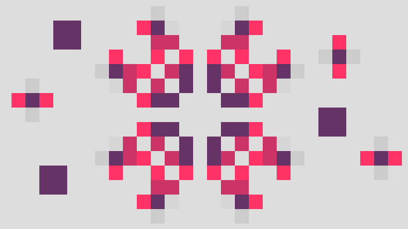

I've been learning more about JavaScript and the DOM in particular, and I wanted to try out something to cement what I'd learned. To that end, I've created an implementation of Conway's Game of Life using nothing but vanilla JavaScript and CSS.
(This is obviously not any kind of monumental achievement - in fact, this is probably, like, implementation #4,920,110 of the Game of Life in Javascript - but it was a fun project, and I'd recommend it to anyone interested in some quick practice in basic DOM traversal.
Conway's Game of Life takes place on a grid of "cells" which can have two possible states - alive or dead. The grid is periodically updated, and during these updates, cells will come alive or die based on the following rules:
And that's all. From just those rules, you can get a dizzying variety of results and patterns - including a Turing machine!
The cells themselves are represented as td elements
in an HTML table.
Each cell is of either the class alive or the class
dead, and those classes are used both to keep track of the
cell's state in the script and to manage CSS formatting.
Each cell also has an "age" class that can be either age0,
age1, age2, or age3. This is
outside the strict rules of the Game of Life and is purely a cosmetic
thing: it's used to add CSS rules showing how long which cells recently
came alive or died.
The elements themselves are automatically added (both to avoid repetitive HTML entry, and to make the size of the grid easily adjustable):
189 190 191 192 193 194 195 196 197 198 199 200 201 202 | var tb = document.getElementById("gol-table");
//Create the table rows and cells
//(done via JS so that the size can be easily adjusted)
var tr, td;
for (let r = 0; r < rows; r++) {
tr = document.createElement("tr");
for (let c = 0; c < cols; c++) {
td = document.createElement("td");
td.className = "gol dead";
tr.appendChild(td);
}
tb.appendChild(tr);
}
|
The most unusual part of using an HTML table for this is accessing
each cell's neighbors to determine whether the cell must live or die.
In most implementations of this game, the cell data would probably be
stored in a matrix; then, checking the cell at
(x, y) would be accomplished by looking up the cell at,
say, (x+1, y+1), for a diagonal neighbor. You could do this
here, too! You could implement the grid's data as a matrix, and then pass
that data to your HTML table to "draw" it.
But if you're storing the data in a table anyway, then that opens up
another method for checking the neighbors: DOM traversal! In particular,
the methods
previousElementSibling,
nextElementSibling, and
parentElement
can work well here.
The horizontal neighbors are the easiest to check, since they are located
in the adjacent tdelements, so they can be accessed by
previousElementSibling and nextElementSibling.
(If the cell being checked is at the left or right edge, then
there is no sibling, and the relevant one of these methods will just return
null - which I interpret here as equivalent to "dead":
26 27 28 29 30 31 32 33 34 35 36 37 38 39 | function get_live_neighbor_count(td) {
//This function returns the number of "alive" neighbors for a given
//cell. Neighbors are those cells which are adjacent horizontally,
//vertically, or diagonally.
var num_live_neighbors = 0;
var n, neighbor; //different vars for neighbors and neighbors' siblings
var x = get_x(td);
//Check cells to the left and the right
for (neighbor of [td.previousSibling, td.nextSibling]) {
if (neighbor !== null && is_alive(neighbor)) {
num_live_neighbors++;
}
}
|
The other six neighbors are a little more complicated, since they're
in different rows. There isn't really (as far as I know) an equivalent
one-liner for "traverse to the td directly above this one."
Instead, order to get to them, we have to first traverse to
the parent row (the tr element) that contains our cell.
Then, we use
previousElementSibling and nextElementSibling to
get to the adjacent rows (where before we were traversing between cells.)
Assuming the adjacent row isn't null, we then
access the td elements inside it using its
children property. But which of the children do we
look at? Even though we aren't using a matrix, we still need to know our
X coordinate... but we can get it using previousElementSibling.
How? We just call it repeatedly until it nulls out:
15 16 17 18 19 20 21 22 23 24 | function get_x(td) {
//x coordinate is retrieved by backing up to the first element (cell)
//in the group of siblings (row).
var x = 0;
while (td.previousElementSibling != null) {
x++;
td = td.previousElementSibling;
}
return x;
}
|
With that, we can access the correct elements of the adjacent rows, which will be our vertically adjacent elements. We can also pick up the diagonally adjacent elements while we're at it.
41 42 43 44 45 46 47 48 49 50 51 52 53 54 55 56 57 58 59 | //Check cells above and below
var this_row = td.parentElement;
for (var tr of [this_row.previousElementSibling,
this_row.nextElementSibling]) {
//If the row exists at all...
if (tr != null) {
//get the cell directly above and below
n = tr.children[x]
//...and check it along with its left/right neighbors
for (neighbor of [n, n.previousSibling, n.nextSibling]) {
if (neighbor != null && is_alive(neighbor)) {
num_live_neighbors++;
}
}
}
}
return num_live_neighbors;
}
|
Getting the number of living neighbors was the hard part. Once that is known, actually doing that whole Game of Life thing is easy!
61 62 63 64 65 66 67 68 69 70 71 72 73 74 75 76 77 78 | function update_cell(td, neighbor_count) {
//Game of Life rules:
//Living cells die if they have fewer than 2 or more than 3 neighbors.
//Dead cells come alive if they have exactly 3 neighbors.
if (is_alive(td)) {
if (neighbor_count < 2 || neighbor_count > 3) {
toggle_alive(td);
} else {
increase_age(td);
}
} else {
if (neighbor_count == 3) {
toggle_alive(td);
} else {
increase_age(td);
}
}
}
|
One implementation detail I didn't quite figure out: if you
fire it up and try to draw on the grid,
you can only do it one cell at a time.
You can't click and drag multiple cells at
once, which makes it a bit harder to draw in a pattern you want.
Right now, clicking on the grid is implemented using
the mousedown event:
204 205 | tb.addEventListener('mousedown',
function(event) {click_on_table(event)});
|
But there might be a better event, or a better way to use it. If you know how I might improve this part of the experience, feel free to drop me a line!
You can check out the full script here along with the full implementation here.